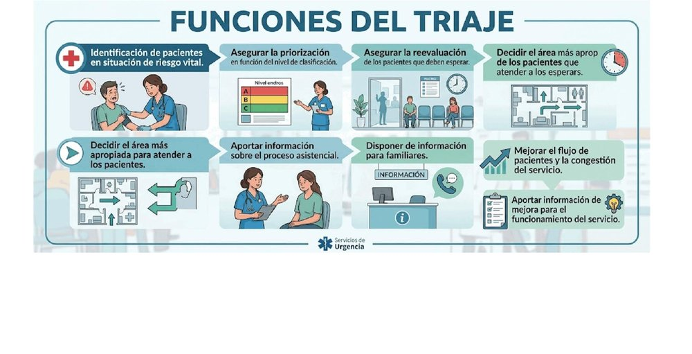
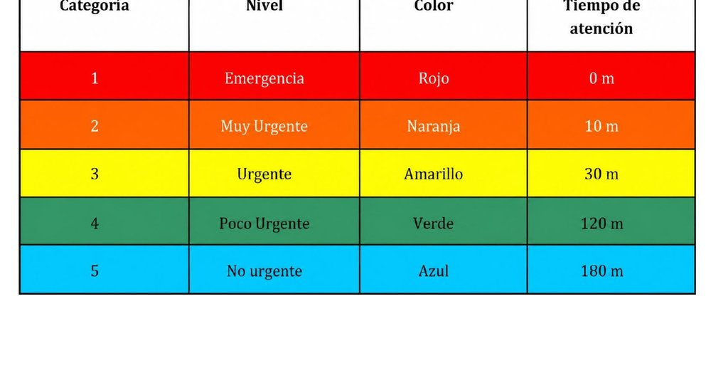
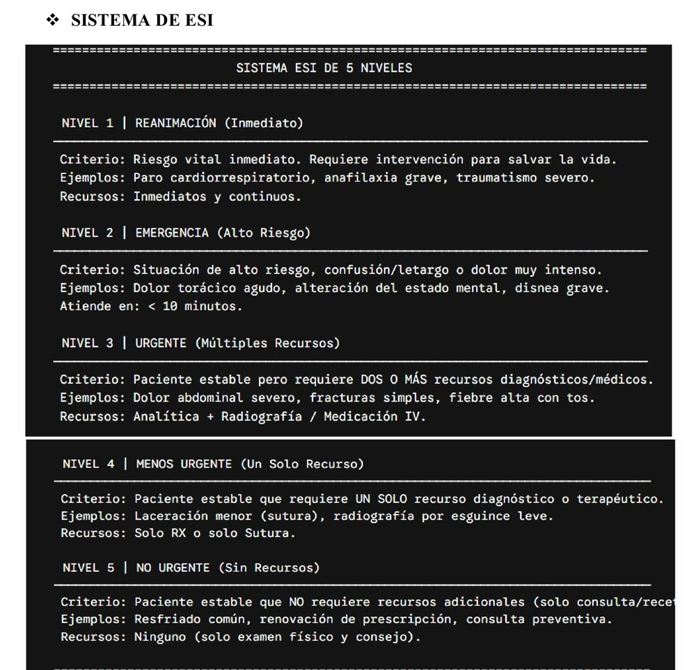
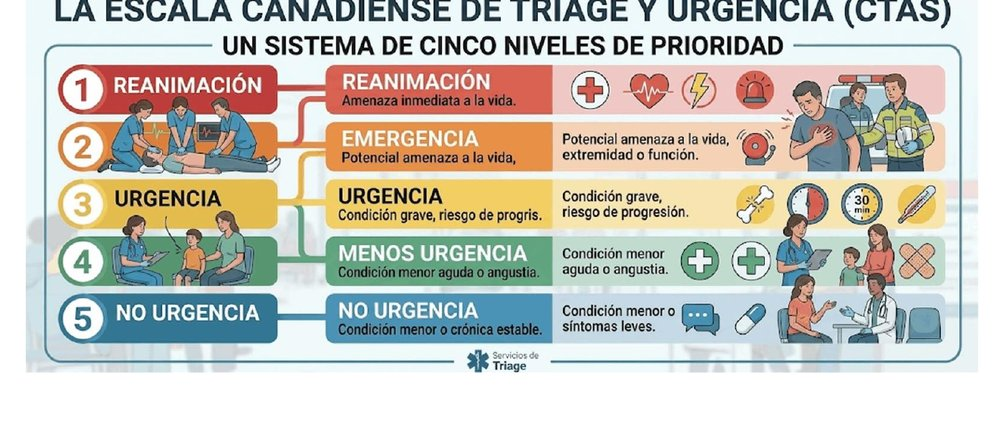
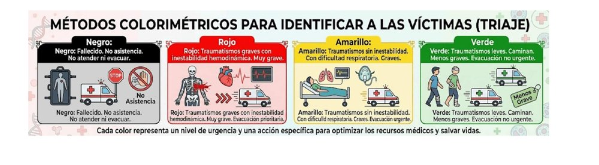
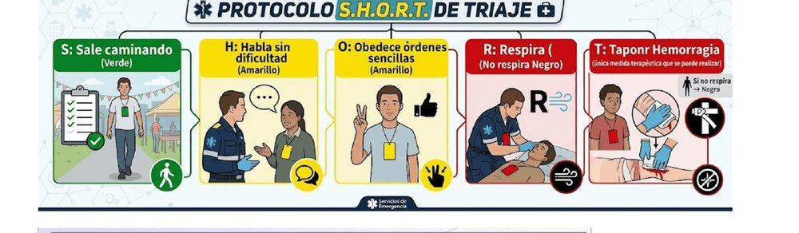
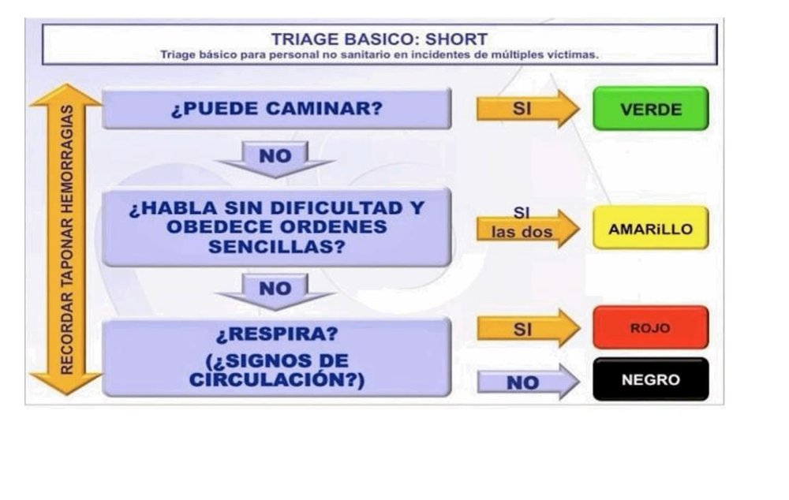
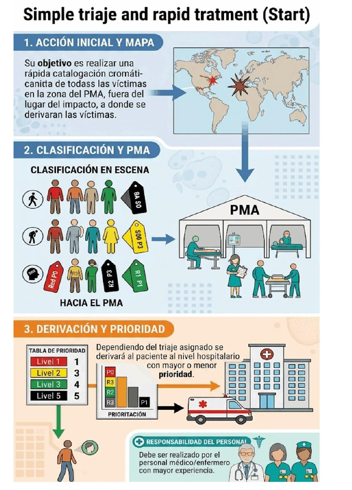

ClinicusMed · Dossiê Clinicus — Padrão de Excelência
Se você já trabalhou (ou vai trabalhar) numa emergência, sabe que a palavra "urgente" é usada o tempo todo — pelo paciente, pela família, pelo próprio serviço. Só que, tecnicamente, existem VÁRIOS conceitos diferentes escondidos atrás dessa mesma palavra, e diferenciar eles é o primeiro passo pra entender como um serviço de urgências deveria funcionar.
| Conceito | Definição |
|---|---|
| Urgência (definição da OMS) | Aparição FORTUITA (imprevista/inesperada), em qualquer lugar ou atividade, de um problema de saúde de causa diversa e gravidade variável, que gera na pessoa (ou em sua família) a CONSCIÊNCIA de uma necessidade IMINENTE de atenção |
| Urgência Real ou Objetiva | Procedimento ou dano que coloca em RISCO algum órgão vital ou a vida do paciente — perigo IMEDIATO. É uma classificação decidida por um MÉDICO |
| Urgência Sentida ou Subjetiva | Necessidade de atenção motivada pelo PRÓPRIO PACIENTE, na qual NÃO existe risco real de órgãos — mas o paciente considera, por múltiplos fatores possíveis, que precisa ser atendido |
| Emergência | Situação que coloca em perigo IMEDIATO a vida do paciente (ou de algum órgão/parte de seu organismo) SE NÃO houver ação imediata, exigindo recursos especiais (serviços de Emergência) |
Segundo as características da demanda solicitada aos Centros Coordenadores de Urgência (CCU), a assistência pode ocorrer em 3 contextos bem diferentes:
| Local | Exemplos |
|---|---|
| Via Pública | Acidentes de trânsito, acidentes laborais, parada cardiorrespiratória na via pública, intoxicações |
| Domicílio da vítima | Parada cardiorrespiratória, patologia médico-cirúrgica, intoxicações |
| Pontos de Atenção Contínua da Atenção Primária | Atenção solicitada pelos próprios profissionais de atenção primária (lembra da APS, vista no capítulo anterior?) |
Esses "Códigos" merecem atenção especial — são protocolos de ativação IMEDIATA e coordenada entre serviços, criados pra situações onde CADA MINUTO conta:
| Código | Situação | Destino |
|---|---|---|
| Código Ictus | Avaliação e tratamento urgente de AVC — "O TEMPO É CÉREBRO!" | Unidade de Ictus/Neurologia |
| Código Grande Queimado | Atenção especializada imediata pra pacientes com queimaduras críticas (mais de 20% da Superfície Corporal Queimada) | Unidade de Queimados |
| Código Infarto | Intervenção rápida pra infartos agudos do miocárdio | Hemodinâmica/Cardiologia |
Um serviço de urgências funciona com uma combinação de pessoal ESTÁVEL (que trabalha ali de forma fixa) e pessoal ROTATIVO:
| Função | Característica |
|---|---|
| Médicos Adjuntos | Plantilla estável |
| Médicos Residentes | Rotantes, e cobrindo plantões de diferentes especialidades |
| Médicos especialistas hospitalares | De plantão (guardia) |
| Enfermagem, Auxiliares de Clínica, Pessoal de apoio (celadores), Administrativos | Todos como plantilla estável |
E quem, na prática, atua como "Médico de Urgências Hospitalares"? Se existe essa figura profissional específica, ótimo — mas na prática, essa função costuma ser exercida por MÉDICOS DE FAMÍLIA ou MÉDICOS INTERNISTAS, que assumem esse papel mesmo sem um título formal de "especialista em urgências".
Um serviço de urgências bem desenhado não é só "um monte de macas numa sala grande" — o espaço físico é organizado em ÁREAS específicas, cada uma com uma função no fluxo do paciente:
| Área | Função |
|---|---|
| Acesso | Atualmente há uma entrada DIFERENCIADA pra pacientes trazidos por ambulâncias do sistema de emergências, separada dos que chegam por meios próprios |
| Área de Admissão | Onde os pacientes são registrados e ocorre todo o trabalho administrativo |
| Área de Classificação (Triagem) | O local destinado à recepção assistencial e atenção imediata dos pacientes que chegam |
| Área de Críticos e Paradas | Onde se atendem pacientes com instabilidade hemodinâmica, que precisam de técnicas avançadas de ressuscitação |
| Boxes/Consultas | Onde se atendem inicialmente as prioridades III, IV e V |
| Área de Observação | Macas ou poltronas — onde os pacientes já avaliados nos Boxes ficam aguardando resultados de exames complementares ou reavaliação clínica após algum tratamento |
| Outras Áreas | Postos de controle de enfermagem, salas de espera, consultórios pra informação médica, etc. |
Essa é a área pra pacientes com instabilidade HEMODINÂMICA, que exigem atenção imediata e monitorização contínua durante sua estância. Dentro dela, existem 2 subdivisões:
| Subárea | Quem é atendido |
|---|---|
| BOX de Paradas (Prioridade I) | Reanimação cardiopulmonar, trauma grave INSTÁVEL, pacientes intubados |
| Monitorização (Prioridade II) | Choque (de diferentes etiologias); trauma grave ESTÁVEL; síndrome coronariano agudo/arritmias instáveis/edema agudo de pulmão; alteração do nível de consciência/convulsões; distress respiratório; procedimentos terapêuticos de risco (cardioversão, drenagem de pneumotórax, ventilação mecânica não invasiva); qualquer paciente com comprometimento vital |
Aqui são atendidas patologias de diferentes especialidades — principalmente Medicina Interna e Cirurgia Geral — além de Boxes ESPECÍFICOS pra: Traumatologia, Curas/Cirurgia Menor, ORL (Otorrinolaringologia), Oftalmologia e Psiquiatria.
Voltando ao problema que vimos lá no início (Urgência Real x Urgência Sentida) — é justamente a triagem que resolve esse conflito na prática: ela organiza a fila NÃO pela ordem de chegada, mas pela GRAVIDADE CLÍNICA real. Isso explica por que às vezes um paciente que chegou depois de você é atendido primeiro — ele não "furou a fila", ele foi classificado com maior prioridade clínica.
A triagem cumpre várias funções simultâneas, além da óbvia "definir quem é mais grave":

O Manchester classifica o paciente segundo sua QUEIXA PRINCIPAL e os SINAIS/SINTOMAS, usando cores pra determinar prioridade e tempo de atenção:
| Categoria | Nível | Cor | Tempo de Atenção |
|---|---|---|---|
| 1 | Emergência | 🔴 Vermelho | 0 minutos |
| 2 | Muito Urgente | 🟠 Laranja | 10 minutos |
| 3 | Urgente | 🟡 Amarelo | 30 minutos |
| 4 | Pouco Urgente | 🟢 Verde | 120 minutos |
| 5 | Não Urgente | 🔵 Azul | 180 minutos |

Diferente do Manchester (que olha sinais/sintomas), o ESI classifica o paciente principalmente pela GRAVIDADE do estado E pela QUANTIDADE DE RECURSOS que ele provavelmente vai precisar durante o atendimento:
| Nível | Critério | Exemplos | Recursos |
|---|---|---|---|
| 1 — Reanimação (Imediato) | Risco vital imediato, requer intervenção pra salvar a vida | Parada cardiorrespiratória, anafilaxia grave, traumatismo severo | Imediatos e contínuos |
| 2 — Emergência (Alto Risco) | Situação de alto risco, confusão/letargia ou dor muito intensa | Dor torácica aguda, alteração do estado mental, dispneia grave | Atende em <10 minutos |
| 3 — Urgente (Múltiplos Recursos) | Paciente estável, mas precisa de DOIS OU MAIS recursos diagnósticos/médicos | Dor abdominal severa, fraturas simples, febre alta com tosse | Exame laboratorial + Radiografia / Medicação IV |
| 4 — Menos Urgente (Um Só Recurso) | Paciente estável que precisa de UM ÚNICO recurso diagnóstico/terapêutico | Laceração menor (sutura), radiografia por entorse leve | Só RX ou só sutura |
| 5 — Não Urgente (Sem Recursos) | Paciente estável que NÃO precisa de recursos adicionais | Resfriado comum, renovação de receita, consulta preventiva | Nenhum (só exame físico e orientação) |

A Escala Canadense de Triagem e Urgência (CTAS) também usa 5 níveis de prioridade, com uma lógica bem parecida com o Manchester/ESI combinados:
| Nível | Categoria | Descrição |
|---|---|---|
| 1 | Reanimação | Ameaça imediata à vida |
| 2 | Emergência | Ameaça potencial à vida, extremidade ou função |
| 3 | Urgência | Condição grave, risco de progressão |
| 4 | Menos Urgência | Condição menor aguda ou angústia |
| 5 | Não Urgência | Condição menor ou crônica estável |

O SET serve pra classificar os pacientes segundo a gravidade do seu estado, definindo quem deve ser atendido primeiro. A lógica é simples: QUANTO MENOR o número, MAIS GRAVE é o paciente, e MAIS RÁPIDO ele deve ser atendido.
| Nível | Cor | Classificação | Exemplo |
|---|---|---|---|
| 1 | 🔴 Vermelho | Crítico — atenção imediata, risco de vida | Parada cardíaca, hemorragia grave |
| 2 | 🟠 Laranja | Emergência — muito grave, atenção rápida | Dor torácico intenso, queimaduras extensas |
| 3 | 🟡 Amarelo | Urgente — precisa de atenção médica, mas pode esperar um pouco | — |
| 4 | 🟢 Verde | Menos urgente — paciente estável, pode esperar mais tempo | Ferida superficial, febre sem complicações |
| 5 | 🔵 Azul | Não urgente — problema leve, sem risco importante | — |
Além dos SISTEMAS de triagem (Manchester, ESI, etc. — que definem COMO classificar), existe também uma classificação por MOMENTO/LOCAL onde a triagem acontece — isso é especialmente relevante em situações com múltiplas vítimas:
| Tipo | Onde ocorre | O que acontece |
|---|---|---|
| 1. Triagem Primário | No LOCAL do acidente | Avaliação RÁPIDA pra identificar quem está mais grave e precisa de atenção primeiro — é uma classificação INICIAL |
| 2. Triagem Secundário | No Posto Médico Avançado (PMA) | O paciente é reavaliado de forma mais COMPLETA, realizam-se medidas de reanimação necessárias, e se decide COMO ele deve ser transportado |
| 3. Triagem Terciário (ou Hospitalar) | No HOSPITAL | Os pacientes são avaliados NOVAMENTE, determinando a prioridade pra receber o tratamento DEFINITIVO e, se necessário, ingressar em cuidados específicos |
| Método | Quem pode aplicar | Característica |
|---|---|---|
| SHORT | QUALQUER pessoa, mesmo sem formação em saúde (desde que previamente orientada/capacitada) | Método simples, com um acrônimo (SHORT) representando os passos a seguir — pensado pra classificação rápida em situações com múltiplas vítimas, aplicável no próprio local do incidente |
| START | Principalmente pessoal de SAÚDE ou capacitado em atenção de emergências | Avaliação rápida pra determinar a prioridade de atendimento — "Simple Triage And Rapid Treatment" |
Métodos colorimétricos usados pra identificar rapidamente as vítimas (a mesma lógica de cores dos sistemas de triagem, aplicada em campo):

O Protocolo SHORT passo a passo:


O Método START, com suas 3 etapas (ação inicial, classificação em cena, derivação por prioridade):

Vamos acompanhar 3 pacientes que chegam à emergência quase ao mesmo tempo, aplicando os conceitos de triagem vistos nesse capítulo. O caso evolui em 3 níveis.
Às 22h, 2 pacientes chegam simultaneamente à recepção: Paciente A relata dor de cabeça leve, presente há 3 dias, e insiste que precisa ser atendido "agora" porque já está cansado de esperar. Paciente B chega trazido por ambulância, inconsciente, após acidente de moto, com sinais de trauma torácico.
Pergunta: Classificando esses 2 pacientes segundo os conceitos de Urgência Real/Objetiva x Urgência Sentida/Subjetiva vistos nesse capítulo, como cada um se enquadra, e por que a ORDEM de atendimento não deve seguir a ordem de CHEGADA nesse caso?
Resposta comentada: O Paciente A representa um caso de URGÊNCIA SENTIDA/SUBJETIVA — ele próprio sente a necessidade de atenção imediata, mas pela descrição (dor de cabeça leve, há 3 dias) não há indicação de risco real a órgãos vitais; a "urgência" aqui é definida pela PERCEPÇÃO do paciente, não por um médico. Já o Paciente B representa uma URGÊNCIA REAL/OBJETIVA (na verdade, uma EMERGÊNCIA) — inconsciência + trauma torácico após acidente indicam risco IMEDIATO à vida, uma situação que precisa ser decidida e confirmada por avaliação médica, mas cujos sinais já apontam claramente pra risco vital. A ordem de atendimento NÃO deve seguir a chegada porque, como vimos nesse capítulo, é justamente a função da TRIAGEM organizar o atendimento pela GRAVIDADE CLÍNICA real — e não pela ordem em que as pessoas chegam ou pela urgência que elas SENTEM ter. O Paciente B precisa ser atendido primeiro, mesmo tendo "chegado" praticamente ao mesmo tempo que o Paciente A.
O Paciente B (trauma) é imediatamente levado pra Área de Críticos e Paradas, onde é intubado e monitorizado continuamente. Nesse momento, chega um 3º paciente (Paciente C), consciente, relatando dor abdominal moderada, sem sinais de instabilidade, mas que provavelmente vai precisar de exames laboratoriais E uma radiografia pra fechar o diagnóstico.
Pergunta: Aplicando o Sistema ESI visto nesse capítulo, em qual nível o Paciente C provavelmente se classificaria, e qual a diferença conceitual entre classificar esse paciente pelo ESI versus classificá-lo pelo Sistema de Manchester?
Resposta comentada: Pelo Sistema ESI, o Paciente C provavelmente se classificaria no NÍVEL 3 (Urgente/Múltiplos Recursos) — porque, apesar de ESTÁVEL (sem sinais de instabilidade), ele precisa de DOIS OU MAIS recursos diagnósticos (exames laboratoriais + radiografia), exatamente o critério definidor desse nível no ESI. A diferença conceitual em relação ao Manchester é justamente o que vimos nesse capítulo: o Manchester classificaria esse paciente baseado PRINCIPALMENTE em sua queixa principal e sinais/sintomas atuais (dor abdominal moderada, sem instabilidade — provavelmente também resultando numa prioridade intermediária, como Amarelo/Urgente), enquanto o ESI incorpora EXPLICITAMENTE a PREVISÃO de quantos recursos esse paciente vai consumir durante o atendimento (nesse caso, 2 recursos = Nível 3) como parte central do próprio critério de classificação — não é só "quão grave ele parece agora", mas também "quanto trabalho diagnóstico ele provavelmente vai exigir".
Horas depois, ocorre um acidente com um ônibus escolar, gerando MÚLTIPLAS vítimas no local. A primeira equipe a chegar é composta por policiais e populares (sem nenhum profissional de saúde presente ainda), que precisam começar a organizar as vítimas antes da chegada da ambulância.
Pergunta: Integrando os conceitos de Tipos de Triagem por Momento e os Métodos SHORT/START vistos nesse capítulo, qual método deveria ser usado NESSE momento específico, por quem, e como esse momento se encaixa na sequência Primário→Secundário→Terciário?
Resposta comentada: Nesse momento específico (chegada de policiais/populares, SEM profissional de saúde ainda presente), o método adequado é o SHORT — justamente porque ele foi desenhado pra ser aplicado por QUALQUER pessoa, mesmo sem formação em saúde (desde que previamente orientada/capacitada), diferente do START, que pressupõe pessoal de saúde ou capacitado especificamente em emergências (que ainda não chegou ao local). Esse momento se encaixa exatamente na etapa de TRIAGEM PRIMÁRIO — realizada NO LOCAL do acidente, com avaliação rápida pra identificar quem está mais grave e precisa de atenção primeiro, configurando uma classificação apenas INICIAL. Quando a ambulância chegar e as vítimas forem levadas a um Posto Médico Avançado (se houver), ocorrerá o TRIAGEM SECUNDÁRIO (reavaliação mais completa, medidas de reanimação, decisão sobre transporte) — possivelmente já usando o método START, já que a partir daí normalmente há pessoal capacitado envolvido. Só depois, no HOSPITAL, ocorrerá o TRIAGEM TERCIÁRIO/HOSPITALAR, com sistemas mais completos como Manchester ou ESI, determinando a prioridade pro tratamento definitivo. Esse caso ilustra bem como a resposta a um evento com múltiplas vítimas é um processo em CAMADAS sucessivas, cada uma com o método e o nível de precisão apropriados aos recursos e à formação de quem está disponível naquele momento específico.
O sistema guarda, no seu navegador, quais cards você já sabe bem e quais precisam voltar mais cedo — cada vez que você avalia um card, ele recalcula quando ele deve voltar.
10 questões, do mais básico ao mais puxado. Escolhe uma alternativa, depois clica em "Ver comentário completo" — vale a pena ler até quando você acerta, porque o comentário explica cada alternativa, não só a certa.